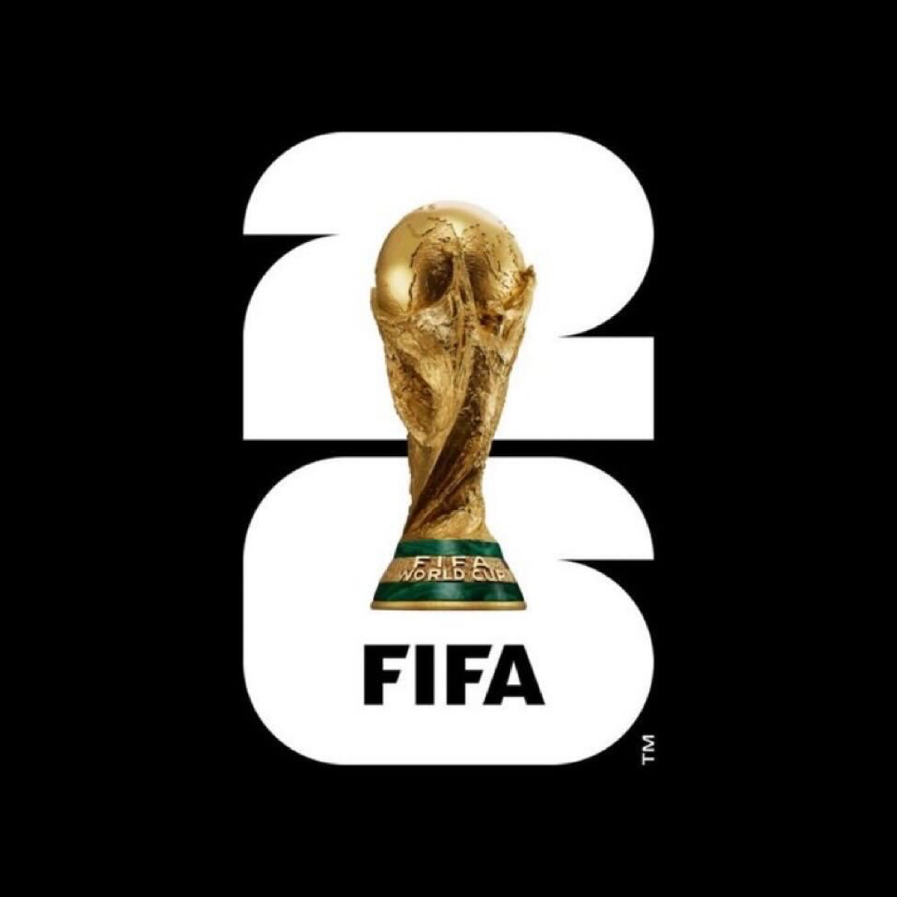

Bienvenido a este portal informativo dedicado a la Copa Mundial de la FIFA 2026. Aquí podrás encontrar información sobre los países anfitriones, las sedes oficiales, los equipos participantes, contenido multimedia y diversos datos relacionados con el torneo más importante del fútbol internacional.
Esta edición será histórica debido a que por primera vez participarán 48 selecciones nacionales y será organizada conjuntamente por México, Estados Unidos y Canadá. Se espera que millones de aficionados de todo el mundo sigan cada partido y apoyen a sus selecciones favoritas.
El objetivo de esta página es reunir información relevante del Mundial 2026 en un solo lugar, permitiendo a los usuarios consultar datos importantes de manera rápida y sencilla.
La Copa Mundial de la FIFA 2026 será la edición número 23 del torneo internacional de fútbol más importante del mundo. Será organizada por México, Estados Unidos y Canadá, convirtiéndose en la primera Copa del Mundo realizada en tres países de manera conjunta.
El torneo contará con 48 selecciones nacionales y se disputará en 16 ciudades sede distribuidas en los tres países anfitriones.
En este mapa se ven las sedes oficiales donde se jugaran los partidos de la FIFA WORLD CUP 26
Las sedes estan seccionadas por color, Verde son Estados Unidos, rojas Canada y amarillos Mexico

Esta imagen es un logo oficial de la FIFA
México albergará partidos en el Estadio Azteca, Estadio Akron y Estadio BBVA.
Estados Unidos contará con la mayor cantidad de sedes y albergará la gran final.
Canadá recibirá partidos en Toronto y Vancouver, participando por primera vez como país anfitrión de una Copa Mundial.
| Grupo A | Grupo B | Grupo C | Grupo D |
|---|---|---|---|
| México 🇲🇽 | Canadá 🇨🇦 | Brasil 🇧🇷 | Estados Unidos 🇺🇸 |
| Sudáfrica | Bosnia y Herzegovina | Marruecos | Paraguay |
| Corea del Sur | Catar | Haití | Australia |
| Chequia | Suiza | Escocia | Turquía |
| Grupo E | Grupo F | Grupo G | Grupo H |
|---|---|---|---|
| Alemania | Países Bajos | Bélgica | España |
| Curazao | Japón | Egipto | Cabo Verde |
| Costa de Marfil | Suecia | Irán | Arabia Saudita |
| Ecuador | Túnez | Nueva Zelanda | Uruguay |
| Grupo I | Grupo J | Grupo K | Grupo L |
|---|---|---|---|
| Francia | Argentina | Portugal | Inglaterra |
| Senegal | Argelia | RD Congo | Croacia |
| Irak | Austria | Uzbekistán | Ghana |
| Noruega | Jordania | Colombia | Panamá |
En esta seccion puedes hacer click en el boton para dirigirte a la pagina oficial de FIFA
Baile Inolvidable de Bad Bunny
Trailer Oficial de FIFA WORLD CUP 26
Telefono: +55 (33) 2188-5975
Correo: danielhernandezlope9@gmail.com